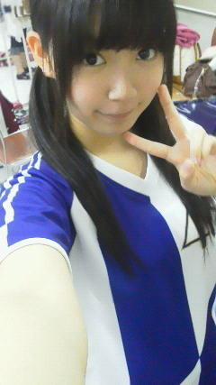
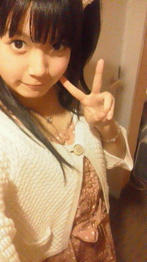
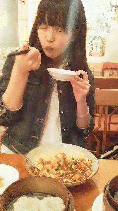

返回列表-BACK TO INDEX
全国握手会in大阪(ω)
この２ヶ月みんなで頑張ってきた
1stシングル「ぐるぐるカーテン」発売イベントも
きのうがラストでした!
東京、名古屋、大阪プラス各チームごと全国のイオンさんにお邪魔しました
計30箇所!
ぐるカーのプロモーションやご挨拶をして回らせてきただきました。
それも最後!
最終日、晴れて33人全員が揃ったぜーっと(o>ω<o)
ステージ!
野外最高やんなあ。
客席の方は屋根なかったけ暑かったよねー大丈夫でしたか?
ステージに立ってる側としては
たくさんの方のお顔が見えて本当に気持ちよかった(^^)
最後の乃木詩の時なんかはみなさん立っていただいたみたいでねーほんとにー
あの紫棒って結構重いのよーここだけの話。わら
んでもみなさんの顔みてたらそんなのどうでもよくなりました(^ω^)
ヘア変えてみたのよー♪

みゅみゅ(若月佑美chan)'ず☆りくえすと
メンバーのあいだでは好評だったんじゃけど、
みなさんはいつものハーフアップと今回のツインどっち派ですかー??
で握手会!
さゆりんご(松村沙友理chan)
みゅみゅ
せっちゃん(宮澤成良chan)
ひめたん
我ら第６レーン(`・ω・')
来て下さった方ありがとうございました!
はじめましての方いぱーいだったけど、生ひめたんはいかがでーすか(^^)?
なんか暑さからか途中ひめたん死んでましたけれども...
ごめんなさーい('・ω・`)
最後超元気になってみゅみゅとぐるぐるカーテンしてたからね。そゆこともある!
そして生誕祭!めっちゃ嬉しかったです生誕祭♪♪
あのケーキは一体何でできてるんでしたっけ?
一回聞いたけど見事に忘れてしまった(ω)
あれは何なのよー☆???
えーそして
帰りはバスです。ばーす!
ひめたんのまわりはいくちゃん(生田絵梨花chan)まいまい(深川麻衣chan)
みゅみゅ・いこまっち(生駒里奈chan)さゆりんご・らりん(永島せいらりん)が
おったかなー♪
でブログ書きよったんじゃけど電池がなくなるんですよこれが。
で最初いくちゃんとうだうだしてたけど、結局寝ちゃった(^^)☆
ゆーわけで
1stシングル「ぐるぐるカーテン」
本当にありがとうございました!
2ndシングル「おいでシャンプー」もよろしくね(^^)
ぐるカーがくれたたくさんの出会いに感謝しつつ、
今から2ndの曲のレッスンに行ってくるね!
早いねーぐるカーの余韻にまだまだ浸ってたいのにー(>_<)
(*´・ω・*)ひめたん
2012/04/30 11:54｜
個別握手会in大阪(ω)
来てくださった方ありがとうございました(*^^*)
ではいつものくだり。私服クイズですちゃーらん。
1.春。春ですよ。ひめたんの大好きなピンクを着なくて何を着るんだよこのやろ。
2.春。春ですよ。あえてベージュでお姉さんぶってこその春じゃないかこのやろ。
どっちでしょう(^^)
ひめきゅんさんならわかるよね?
ひめたんの趣味とか好きなものとか知ってるでしょ?
ということで
「1ーっ!」
「2ーっ!」
って叫んだ方から正解をみてくださいこちらっ。

なんかちょっとお姉さんぽくなった??ていろんな方に言われましたけれども
そうかしらー?
それはベージュパワーじゃないでしょうか。
ま高校だもんね。16歳だもんね。どやー('・ω・`)!
はいそしてー大阪。
やっぱりミニ握以来って方が多かったかな。
それからひめたんの地元広島から近いので、
ひめたんがスクール通ってた時から応援してくださっていた方なんかも
遊びにきてくださりまーした∪・ω・∪☆
さらに話かわって
全国握手会!
明日は全国握手会でございますよみなさんんぬっ
さゆりんご(松村沙友理chan)
みゅみゅ(若月佑美chan)
せっちゃん(宮澤成良chan)
ひめたん
第６レーンでお待ちしてます(^ω^)♪
さらにパフォーマンスもあるね
全握３回目にして初の33人全員参加ー♪
はい前回中元さんも欠席したひとりなんだけどねー
もうね。楽しみすぎるね!
はい最後にもいっこ宣伝
おいでストリーミングラジオ!
これは乃木坂46公式サイトで聴けると思うんじゃけどねー
簡単に説明しますと、メンバーたちのフリートークが聴けますよって話(ω)
メンバーの組み合わせ・登場順はじゃんけんで決め、
ほとんど白紙に近いような原稿を渡され
しかも15分程度もお話しするて!
しかも4/28から公開のそのラジオ、撮ったの4/26だからね!
緊急企画すぎるよね(^ω^)わら
そうそう。ひめたんは4/28、第一回のオンエアのやつに登場!
みゅみゅ(若月佑美chan)まあや(和田まあやchan)ひめたんの３人です。
よかったらきいてみーてねー♪
それでは!
明日も頑張ります!
おやすみなさーい♪
(*´・ω・*)ひめたん
2012/04/29 00:00｜
新幹線わず(・ω・)♪
3人席でななみん(橋本奈々未chan)かずみん(高山一実chan)と爆睡わーず。
新幹線のったの久しぶりやんなあ。新幹線ー。
横浜〜名古屋間がめっちゃ遠いんだよね(^^)
ああ懐かしや。
ということで!
／
4/28 個別握手会
4/29 全国握手会
innn 大阪ー!!!!!
＼
全握・個握ともに、1stシングルぐるぐるカーテンの最後の握手会!
全員出席!実は全員そろっての全握は初めてなんよね(*^^*)
大阪久しぶりやねんっ
イオンツアー以来、２ヶ月ぶりの大阪訪問やねん♪
ひめたん前に大阪きたときに思ったの。
あったかい。ぱわふる。素敵な街やねんおおさかー＼(^O^)／☆
ではおおさかでの宿題!
おすすめのおみやげ物とかありますかー?
今日明日はいくちゃん(生田絵梨香chan)と2人部屋だぜっ!
あんまり夜更かししない程度に、いろいろお話する予定ですぜ。
最近はお互い学校があってお仕事来れなかったりとかってので
今夜は久しぶりいくちゃんを満喫するぜ。
明日の握手会のこと、公開されたラジオのこと
書きたいことはいっぱいあるんですがだがしかし!
明日の集合がはやいのです...。
のでもう寝てまうねっ
ごめんねっ
握手会楽しみやー

いくよって方よろしくお願いしますね♪♪
(*´・ω・*)ひめたん
2012/04/28 02:12｜
今日は番組収録してきました!広島のローカル番組
アグレッシブですけど、何か?
まあや(和田まあやchan)と２人て頑張りました!
いやー広島おるときCMいっぱい見てたけど、
まさか出演させていただけるなんて(^ω^)
ひめたん自身オンエアが広島で見れんのが残念なけど、
でも恥ずかしいので地元の友達には出演することは秘密です。
番組の中で「いつもみてましたー♪」なんて言いましたが
深夜番組なので、実はいつもは見てられ...ごほっ
でも予告のCMは本当にいつも見てるし、存在はもちろん知っております(*^^*)
だって全国区だって思ってたくらい!
番組は反省点だらけなので、これからひとり反省会しようと思います...。
広島ホームテレビ見れるぜーって方は
まだまだトークがぐだぐだで、無茶ぶりが苦手な
「素」そのものの私たちをお楽しみください(^ω^)

わら
ああ。なんでこんなプレゼンしかできないのよあたしは。
やっぱり反省会してきまする('・ω・`)るるる
あー!
合宿どうだったのよっていろんな方に言われたので
簡単に書きましょうか。
ばすのって
ドッジボールして
学校の歴史なんか学びました!
お友達いっぱいできたから楽しかった!
 僕の誕生日26日は大阪の個握の近く!!祝ってくれる(^^)?
僕の誕生日26日は大阪の個握の近く!!祝ってくれる(^^)?お誕生日おめでとう!
って今言ってもいいけど、せっかくだから直接言いたいよね。
ぼく26日誕生日なんよってちゃんと言ってくださいね!
全力で応援しますよー(^ω^)
 ひめたんにツンデレしてもいいのかな?(笑)
ひめたんにツンデレしてもいいのかな?(笑)いいけど、ひめたんはそんなに器用な人じゃないから
でれでれしてくれる人が好きなんだけどな

??
握手会のときにこんなことを話してもらえるとうれしい、とかはある?
ひめたんの好きなところを延々と熱く語る

とかゆーて。
お誕生日のお手紙、大阪の握手会の時でいいかな?
待ってる(^^)!
ありがとうございます☆
たこ焼きかお好み焼きどっちが好きなん?
たこは食べれないけどやきは大好きだよひめたん。
お好み焼きは広島風がいいな。え?せっかく関西いくのにって?わら
個別で言ってもらいたい言葉があるんですが...リクエストしても良い...?
何ですかなんですかー
なんなりとお申し付けくださいよ＼(^O^)／
 次がまだひめたんに会うの大阪のミニ握以来の２回目なんだけど、
次がまだひめたんに会うの大阪のミニ握以来の２回目なんだけど、ブログのコメントしてる名前言ったら覚えてくれる??
おお!2ヶ月ぶりってことですね♪
ブログの名前言ってくれたら「ああ!」ってなりますよー言っていって♪
じゃあ久しぶりにあえるの楽しみにしてるんるん(^^)
手紙やプレゼントを送ろーって思ってたんだけど、
どう頑張っても間に合わないーっ(>_<)
大阪の個握で渡そうかなーって(^^;)...いいですか?
てか許しくださいね?
ありがとうございますっ
いつでもいいですよってかむしろ嬉しいし申し訳ないし
ありがとうございます!
ひめたんの大阪の思い出はどんなのがあるかな?
ある日ぱぱとままに「ドライブ行くよー♪」って
広島から大阪までドライブしました(^O^)
で食い倒れして日帰り!
素敵しょー???
 大阪の全握では日芽香ちゃんのパフォーマンスを観れるかな?
大阪の全握では日芽香ちゃんのパフォーマンスを観れるかな?期待大∩^ω^∩
とかゆーて自分で自分のハードルをあげてみたり。
まあ間違いなく中元さんのパフォーマンスみれますよ(^^)
ゴールデンウィークに広島帰るんじゃけど、
最近の広島のオススメスポットorグルメはなんかありますか?
ゴールデンウィークといえばフラワーしか(o>ω<o)!
最近はひめたんも東京おるけわからんのんよね←
何だろう。
(*´・ω・*)ひめたん
2012/04/27 01:12｜
会社に行きました∩^ω^∩☆
あのねー、ひめたん最近会社に行っても長居することなかったからね
ようやくお手紙やプレゼント受け取りました!
ひめたんはみなさんに支えられてるんだなって
心がほっこりしました(*^^*)
乃木どこ放送直後の、頑張ろう!って決心とか
生誕祭やってもらった時の感動とか
いろいろよみがえってきたきたきたー♪♪♪
最近は
ブログとかお手紙とかでしかみなさんに会えないから
今日は久々にいっぱいお話した感

お手紙と
わら
あっそれから
ちょいと前のブログで万理華特集☆
万理華も読んでくれましたらしいのよー♪
そしたらめちゃ喜んでぎゅーってしてくれました!
まーりか(o>ω<o)
そんでね、万理華特集・ろってぃ特集書いてて思ったんだけど
やっぱり相手のことをよくわかってないと書けない!
表側の薄っぺらい部分だけじゃなくて、本当に相手のこと理解してないと
その人のことうまく伝えることなんて無理なのよ。
相手のこと知ってれば知ってるだけ深ーい紹介ができるんだよね。
みなさん知らないかもだけど、実はこんなに素敵な子なんだよ!って♪
ってのを考えた時に気付いた。
みゅみゅ(若月佑美chan)すげーな(・ω・)

 俺の誕生日4月25日だから若干遠いから仲間は入れずだわp('⌒`q)
俺の誕生日4月25日だから若干遠いから仲間は入れずだわp('⌒`q)でも、ひめたんはお祝いしてくれるはずww
おめでとうございます!
これまたひめたんと近いやんけー♪
笑顔の写メは「次に期待して」。
そう。知る人ぞ知るかずみん(高山一実chan)のあの解答です(^^)!
とにかくお誕生日おめでとうございますいえあ☆
 大阪で食べておきたいものがあれば教えてください。
大阪で食べておきたいものがあれば教えてください。たこなしたこやき!
そういや前にお邪魔した時にたこやき食べてなかった(・ω・)
握手会に来た人って、何人くらい覚えてますか?
全員数えてたら日が昇る!
てか数えてるうちに多分寝る。寝てまう('・・`)♪
握手会っていろんな県から来てる人いると思うけど
びっくりしたのはどこから来てる人だった?
遠くから来られてる人いた?海外とか?
海外からお越しの方にはまだあったことないなあ
ひめたんは北海道や沖縄から来てたらびっくりするし
会場の超近場から来ててもこれまたびっくりするし
結局どこから来てもびっくりする!
乃木坂はこんなとこにまで浸透してるのかーとでもいいましょうか(^ω^)
俺の名前、握手会で言えば分かる?
わかる自信あるよー(ω)☆
言ってみるしかっ
握手会のときにフルネームで呼んでいい?
呼んで呼んでっ♪♪
なかもとーひーめかー!
乃木ジャーじゃなくてアディジャーで握手行ってもいい?(笑)
あ、あでぃじゃ。わら
乃木じゃでなくあでぃじゃ。
一応許可はするけれどもー
握手会でコメントしてる名前言ったら覚えてくれる??
何回ひめたんのとこ行ったら覚えてくれるー??
ファンの顔とかって覚えてるもんなの?
覚えてるよ結構☆
ただし記憶を引っ張り出すのに時間がかかることあるから
誰か中元さんの頭をお掃除してくださいなー♪
大阪の握手会では名古屋の分まで俺を楽しませてくれる?
よしっ約束しましょう!
大阪個別もご欠席ってこたあないよね?
ないないないよ行くよー!
楽しみすぎて最近全然寝れなーい(o>ω<o)
 ひめたんのとっておきダイエット方法あったら教えて?
ひめたんのとっておきダイエット方法あったら教えて?一時期、痩せたねーっていろんな人にほめてもらったことがあったんだけど
その時はプール通ってましたかな(*^^*)
やっぱりプールは健康的なダイエット方法だと思うよ〜♪
あたしも行かねばーっ!
脱甘い物してるひめたんブログを読みながら
饅頭を食べ、カフェオレを飲んでいます
そんなファンをどう思いますか?www
ひめたんの代わりに美味しいものを満喫して、幸せになってくれてありがとう。
...てことにしておいてください('・ω・`)
(*'・ω・*)ひめたん
2012/04/26 01:00｜
返回列表-BACK TO INDEX